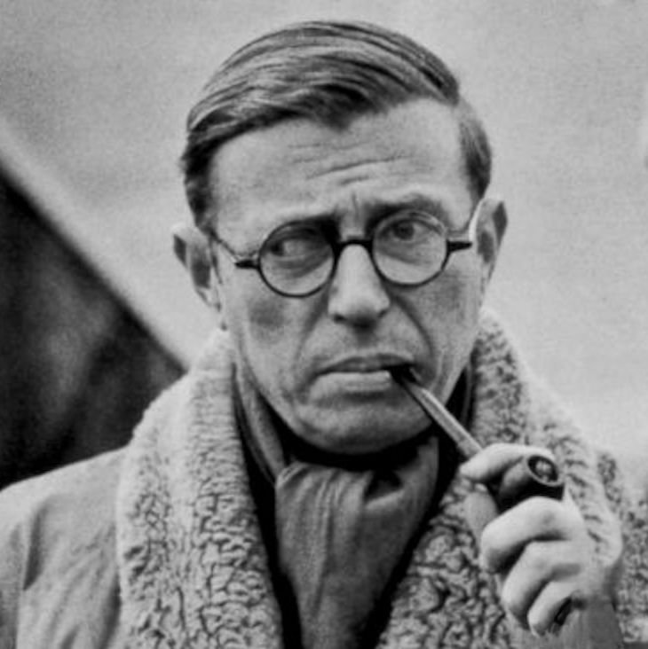

Introduction
This website is an exhibition-style academic project introducing Jean-Paul Sartre and his lecture Existentialism Is a Humanism. The purpose of the site is not technical sophistication, but the combination of Western philosophical thought with a basic web-based form of presentation.
Sartre delivered the lecture in 1945, in the aftermath of World War II, at a moment when European intellectuals were rethinking freedom, responsibility, and human meaning. Existentialism was widely criticized at the time as pessimistic or immoral. Sartre’s lecture is a direct response to these accusations.
Existence Precedes Essence
Sartre’s most famous claim is that existence precedes essence. Human beings are not born with a predefined nature or purpose. Instead, they exist first and define themselves through action. This idea challenges traditional religious and metaphysical conceptions of human nature.
Freedom and Responsibility
According to Sartre, human freedom is unavoidable. Every action, including inaction, constitutes a choice. With freedom comes absolute responsibility—not only for oneself, but for humanity as a whole.
Why Existentialism Is a Humanism
Sartre argues that existentialism is a form of humanism because it places human beings at the center of meaning-making. There is no authority higher than human action and commitment. Human dignity arises from the capacity to choose and to act responsibly.